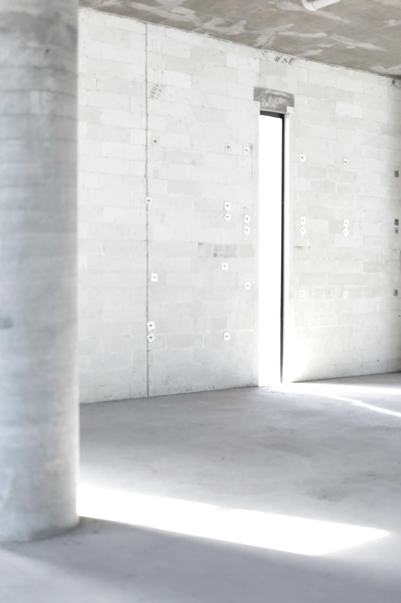
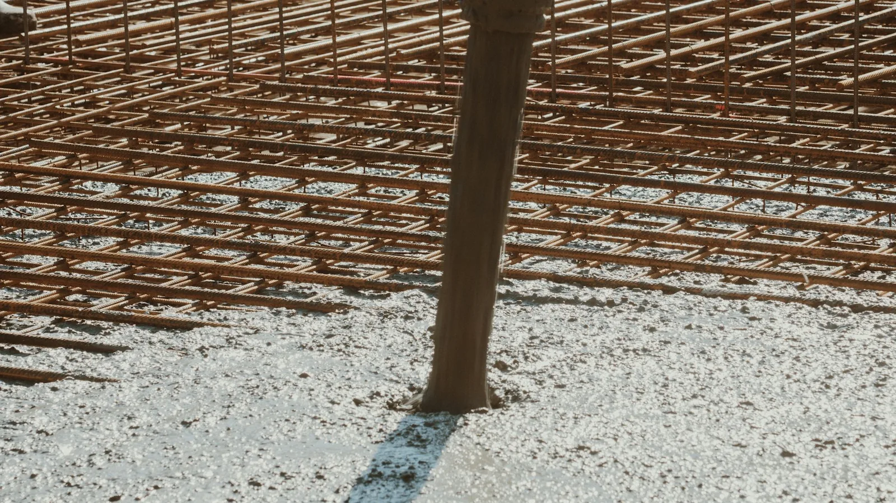
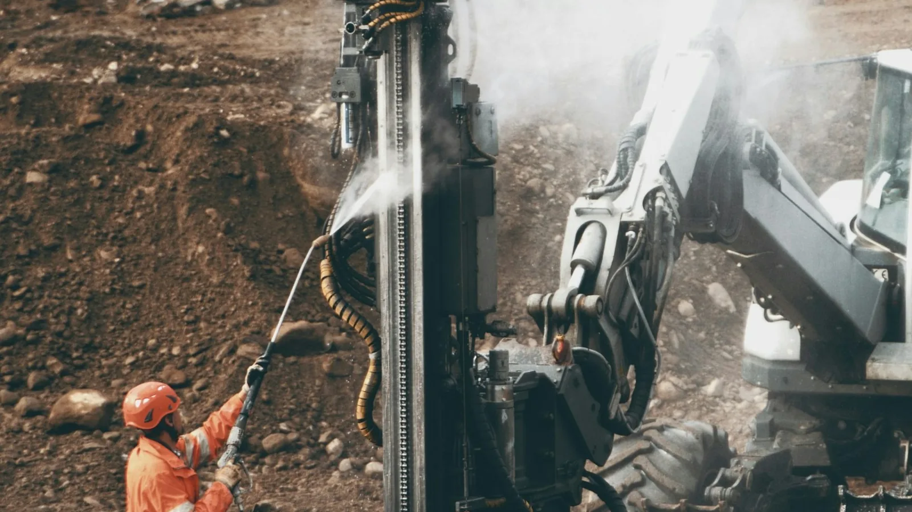
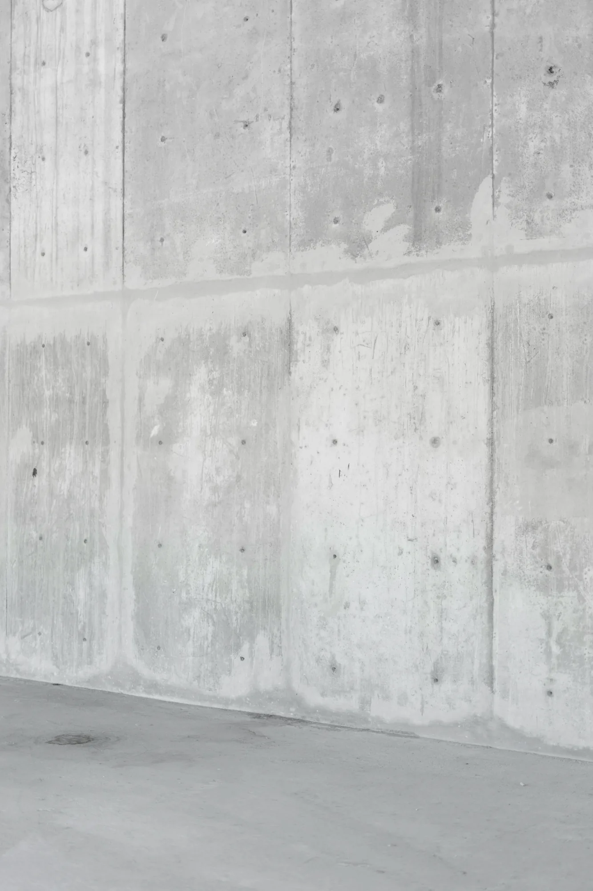
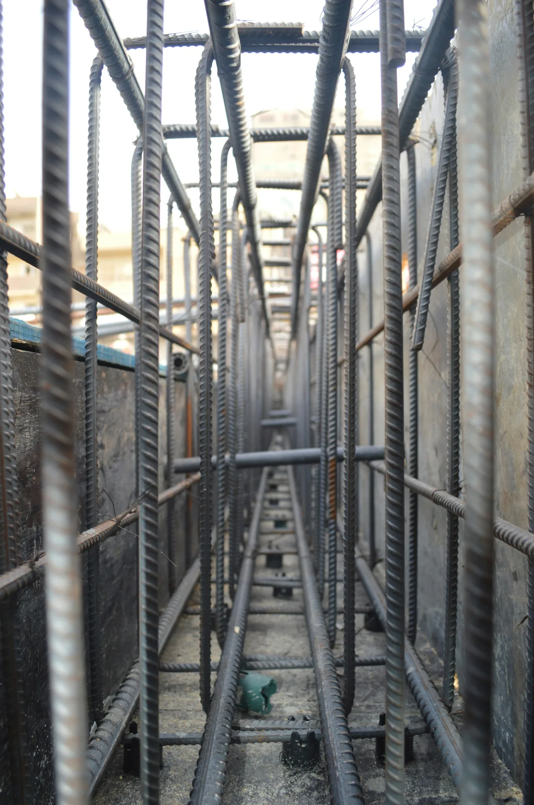
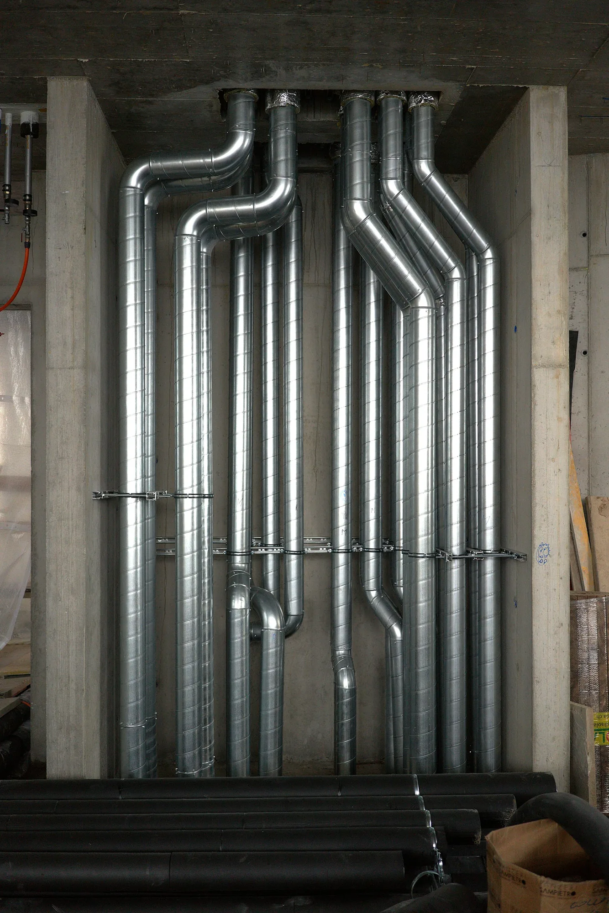

Performans, görünür olmadan önce inşa edilir.
Bir yapının yapısal güvenliği, kullanılabilirliği ve dayanıklılığı; projeye özgü zemin araştırması ve geoteknik değerlendirmeyle başlayan, deprem analizi, statik tasarım, donatı detaylandırması, beton şartnamesi ve uygulaması, su yalıtımı, yapı kabuğu mühendisliği ve çok disiplinli tesisat koordinasyonuyla süren bütünleşik bir mühendislik süreciyle kurulur.
Nova, yapımı tanımlı bir mühendislik sisteminin fiziksel olarak hayata geçirilmesi olarak ele alır. Yapısal kabuller, malzeme şartnameleri, donatı detaylandırması, uygulama toleransları, imalat sıralaması ve arayüz gereklilikleri; tutarlılığı analizden ve teknik dokümantasyondan saha uygulamasına, doğrulamaya ve tamamlanmaya kadar korunması gereken birbirine bağlı parametreler olarak değerlendirilir.
Betonarme yapımda performans; yalnızca öngörülen beton dayanımı ve donatı miktarına değil, aynı zamanda donatı düzenine, kenetlenme ve bindirme detaylarına, enine donatı ve sargılamaya, betonun yerleştirilmesi ve sıkıştırılmasına, anma beton örtüsüne, uygulama toleranslarına, kür koşullarına ve inşaat derzlerinin çözümüne de bağlıdır. Bu parametreler; kuvvet aktarımını, şekil değiştirme kapasitesini, çatlak kontrolünü, dayanıklılığı, kullanılabilirliği ve tasarımda kabul edilen yapısal davranışı etkiler.
Aynı mühendislik disiplini birincil taşıyıcı sistemin ötesine uzanır. Su yalıtımı sürekliliği, ısı ve hava kontrol katmanları, cephe ve cam arayüzleri, geçişler, drenaj, akustik yapı elemanları ve tesisatlar tek bir yapı sisteminin parçaları olarak koordine edilir. Tasarım, malzeme uyumu veya uygulamadaki süreksizliklerin uzun vadeli performansı belirleyebildiği birleşim ve arayüz noktalarına özel önem verilir.
İstanbul'da geliştirilen projelerde yapısal ve imalat kararları; projeye ve ruhsat tarihine uygulanabilir Türk mevzuat ve teknik çerçevesi kapsamında değerlendirilir. Bu çerçeve TBDY 2018'i, Türkiye Deprem Tehlike Haritası'nı, projeye özgü geoteknik gereklilikleri ve yükler, betonarme tasarım, malzeme ve uygulamaya ilişkin yürürlükteki standartları içerir. Amaç yalnızca ayrı ayrı şartnamelere uygunluk değil; mühendislik niyetinin analiz ve detaylandırmadan yapıma, doğrulamaya ve uzun vadeli kullanıma kadar sürekliliğidir.
Yapısal davranış sistemin bütünü tarafından tanımlanır ve bağımsız elemanlar topluluğu olarak değil, sürekli bir yük taşıyıcı sistem olarak geliştirilir. Düşey yükler, deprem etkileri, rijitlik dağılımı, yük aktarım mekanizmaları ve temeller, düşey taşıyıcı elemanlar ile döşeme sistemleri arasındaki etkileşim; benimsenen taşıyıcı sistemle tutarlı üç boyutlu bir analiz modeli içinde değerlendirilir. Yapısal kurgu; zemin ve temel koşulları, yapı geometrisi, kütle ve rijitlik dağılımı, mimari organizasyon, yük talepleri ve projeyi yöneten deprem tasarım gereklilikleri üzerinden projeye özgü olarak belirlenir.
Hiçbir taşıyıcı sistem şablonla seçilmez. Zemin ve temel koşulları, yapı yüksekliği ve geometrisi, mimari kurgu, düşey yük talepleri, deprem etkileri, rijitlik dağılımı ve uygulanabilir performans gereklilikleri her proje için ayrı ayrı değerlendirilir. Ortaya çıkan yapısal kurgu; temellerin, kolonların, perdelerin, kirişlerin ve döşeme sistemlerinin üstyapıdan taşıyıcı zemine kadar tanımlı ve sürekli yük yolları sağladığı bütünleşik bir sistem olarak geliştirilir. Yapısal analiz ve detaylandırma; TBDY 2018 ile TS 498, TS 500, TS 708 ve TS EN 13670'in ilgili hükümlerini içeren yürürlükteki Türk mevzuat çerçevesinde ve projeye özgü geoteknik, mimari ve uygulama dokümantasyonuyla birlikte geliştirilir.
Yapısal davranış bir sistem özelliğidir.
İstanbul'daki projelerde deprem etkileri, yapısal tasarımın en erken aşamasından itibaren temel bir tasarım koşuludur. Deprem analizi TBDY 2018 çerçevesinde yapılır. Deprem yer hareketi girdisi; proje koordinatları ve ilgili deprem yer hareketi düzeyi için Türkiye Deprem Tehlike Haritası'ndan, yerel zemin sınıfı ve benimsenen tasarım sisteminin öngördüğü yapısal parametrelerle birlikte belirlenir. Deprem davranışı, tek tek kolon, kiriş veya perdelerin yalıtılmış dayanımıyla değil, taşıyıcı sistemin bütün olarak davranışıyla yönetilir. Deprem kütlesi, etkin rijitlik, yapısal geometri, dayanım, süneklik, diyafram davranışı, temel koşulları ve yatay yük taşıyıcı elemanların üç boyutlu dağılımı; modal davranışı, iç kuvvet dağılımını, yatay şekil değiştirmeleri ve burulmayı birlikte etkiler. Analiz modeli bu ilişkileri öngörülen deprem etkileri altında temsil eder. Modal özellikler, iç kuvvetler, yatay yer değiştirmeler, göreli kat ötelemeleri, burulma davranışı ve temel etkileri; ilgili dayanım, şekil değiştirme kapasitesi ve detaylandırma gereklilikleriyle birlikte değerlendirilir.
Yapının deprem etkisi altındaki davranışını değerlendirmek için kullanılan; yapısal geometri, deprem kütlesi, etkin rijitlik, diyafram davranışı ve sınır koşullarının üç boyutlu temsili.
İlgili deprem yer hareketi düzeyi, haritalanmış tehlike parametreleri, yerel zemin sınıfı ve benimsenen taşıyıcı sistemin parametrelerinden belirlenen tasarım deprem etkileri.
Taşıyıcı sistemin dinamik davranışından kaynaklanan, hesaplanmış yatay yer değiştirme biçimi.
Birbirini izleyen kat seviyeleri arasındaki göreli yatay yer değiştirme; deprem tasarım çerçevesinin öngördüğü şekil değiştirme sınırlarına göre değerlendirilir.
Üstyapıdan temel sistemi aracılığıyla taşıyıcı zemine aktarılan kuvvet ve momentler.
Proje koordinatları ve ilgili deprem yer hareketi düzeyi için tanımlanmış, haritalanmış deprem yer hareketi parametreleri.
Deprem ve temel tasarımıyla ilgili projeye özgü tabakalanma, yer altı suyu koşulları, mühendislik parametreleri ve yerel zemin sınıflandırması.
Deprem kütlesinin yapı yüksekliği ve planı boyunca büyüklüğü ve mekânsal dağılımı.
Yatay şekil değiştirmeyi ve iç kuvvet dağılımını belirleyen yapısal rijitliğin büyüklüğü ve mekânsal dağılımı.
Taşıyıcı sistem içinde kütle, rijitlik ve yatay dayanım arasındaki mekânsal ilişkiden doğan dönme davranışı.
Benimsenen deprem tasarım sistemiyle uyumlu olarak, belirlenmiş yapısal mekanizmaların dayanımını erken yitirmeden elastik olmayan şekil değiştirme yapabilme kapasitesi.
Birbirini izleyen kat seviyeleri arasındaki göreli yatay yer değiştirme; yürürlükteki deprem tasarım çerçevesinin öngördüğü şekil değiştirme sınırlarına göre değerlendirilir.
Belirleyici tasarım etkileri altında üstyapı, temel sistemi ve taşıyıcı zemin arasında aktarılan kuvvet ve momentler.
Temel mühendisliği; zemin araştırması, arazi ve laboratuvar verileri ile mühendislik yorumundan oluşturulan projeye özgü bir geoteknik modelle başlar. Zemin ve kaya tabakalanması, yer altı suyu rejimi, mühendislik parametreleri, kazı geometrisi, komşu yapılar ve üstyapıdan aktarılan etkiler birlikte değerlendirilir. Temel davranışı, taşıyıcı zeminden bağımsız olarak ele alınamaz. Taşıma gücü, toplam ve farklı oturmalar, şekil değiştirme uyumu, temel rijitliği, yer altı suyu etkileri ve ilgili olduğu hâllerde zemin–yapı etkileşimi ile sismik geoteknik koşullar; temel sisteminin seçimini, analizini ve detaylandırmasını etkiler.
Bu nedenle kazı destek yapıları ve zemin altı imalatları, birbirine bağlı geoteknik ve yapısal tasarım problemleri olarak geliştirilir.
Proje referans kotu ve zemin kotu kurgusu; topografik ölçüm, mimari ve imar kısıtları, sahaya erişim gereklilikleri ve komşu parseller ile altyapıyla ilişki üzerinden belirlenir. ±0.00 referans kotu projeye özgüdür ve yapı, mevcut zemin ile tesviye edilmiş zemin kotları arasında genel geçer bir ilişki olarak yorumlanmamalıdır.
Zemin altı katların sayısı, derinliği ve kurgusu; onaylı mimari ve statik proje ile otopark, sirkülasyon, tesisat, kazı ve arsa kısıtları birlikte değerlendirilerek belirlenir. Bodrum geometrisi; temel sistemi, iksa yapıları, yer altı suyu koşulları ve komşu yapılarla koordine edilir; çünkü bu bileşenler kazı, yapım ve tamamlanmış durum boyunca birbirini etkiler.

Kazı destek sistemi; kazı derinliği ve geometrisi, zemin tabakalanması ve mühendislik özellikleri, yer altı suyu koşulları, imalat sıralaması, şekil değiştirme sınırları ile komşu yapı ve altyapıların yakınlığı ve hassasiyeti esas alınarak seçilir. Proje koşullarına göre sistem; geçici yapılardan, kalıcı yapılardan veya her iki işlevi gören elemanlardan oluşabilir. Zemin ve su basınçları, taban ve genel stabilite, zemin hareketleri, yapısal davranış ve inşaat aşaması davranışı; yürürlükteki geoteknik tasarım esasları ve Kazı Destek Yapıları Hakkında Yönetmelik uyarınca değerlendirilir.
Temel tipi, geometrisi, rijitliği ve donatısı; üstyapıdan aktarılan etkiler ile taşıyıcı zeminin geoteknik özellikleri birlikte değerlendirilerek belirlenir. Taşıma gücü, toplam ve farklı oturmalar, şekil değiştirme uyumu, yer altı suyu koşulları ile temel, bodrum yapısı ve iksa sistemi arasındaki etkileşim ilgili olduğu hâllerde değerlendirilir. Bu nedenle ortaya çıkan temel çözümü, her projenin yapısal taleplerine ve geoteknik koşullarına özgüdür.

Zemin profili projeye özgü zemin araştırmasıyla belirlenir ve geoteknik model üzerinden yorumlanır. Zemin ve kaya birimleri; sahaya uygun olduğu ölçüde arazi gözlemleri, yerinde deneyler, laboratuvar deneyleri ve mühendislik değerlendirmesiyle tanımlanır. Tabaka sırası, kalınlık, mühendislik özellikleri ve yer altı suyu koşulları sahadan sahaya değişir ve komşu projelerden varsayılmaz.
Zemin araştırmasının kapsamı, yöntemi ve derinliği; yapı özellikleri, ön temel konsepti, jeolojik koşullar ve planlanan imalatları önemli ölçüde etkileyebilecek ya da bunlardan etkilenebilecek zemin bölgesine göre belirlenir. Bu nedenle araştırma derinliği, genel geçer bir ön tanımlı değerle değil, mühendislik gereklilikleriyle belirlenir. Saha parametreleri projeye ait araştırma ve değerlendirmeden türetilir; komşu projelerin geoteknik parametreleri projeye özgü araştırmanın yerine kullanılmaz.

Zemin koşulları, yer altı suyu rejimi, geoteknik tasarım parametreleri, kazı destek gereklilikleri ve temel çözümleri; projeye özgü zemin araştırması, Zemin ve Temel Etüdü Uygulama Esasları ve Rapor Formatına Dair Tebliğ, uygulanabilir olduğu hâllerde TBDY 2018 Bölüm 16 ve statik tasarım esasları uyarınca her proje için ayrı ayrı belirlenir.
Beton performansı basınç dayanımının ötesine geçer.
Öngörülen basınç dayanımı, betonarmenin performansını belirleyen yalnızca tek bir parametredir. Beton şartnamesi aynı zamanda çevresel etki koşullarını, kıvamı, bileşen malzemeleri ve dayanıklılık gerekliliklerini de kapsar; tamamlanmış taşıyıcı elemanda elde edilen performans ise üretim uygunluğuna, taşımaya, yerleştirmeye, sıkıştırmaya, küre, donatı yoğunluğuna, beton örtüsüne ve uygulama sırasındaki çevresel koşullara bağlıdır. Dolayısıyla ortaya çıkan yapısal performans; malzeme şartnamesi, üretim kontrolü ve saha uygulaması arasındaki süreklilikle belirlenir. Beton yalnızca şartnamesi verilmiş bir malzeme değil; özelliklerinin üretimden yerleştirmeye, küre ve doğrulamaya kadar korunması gereken bir mühendislik süreci parçası olarak ele alınmalıdır.
Beton gereklilikleri; statik tasarım, öngörülen basınç dayanımı sınıfı, çevresel etki sınıfı, dayanıklılık gereklilikleri, kıvam sınıfı ve uygulanabilir olduğu hâllerde klorür içeriği sınıfı ile en büyük agrega boyutu üzerinden, yürürlükteki malzeme ve uygulama standartlarıyla birlikte belirlenir.
Beton üretimi; öngörülen taze ve sertleşmiş beton özelliklerinin sağlanması için bileşen malzeme kontrolü, dozajlama ve üretim prosedürleriyle denetlenir. Üretim kontrolü ve uygunluk değerlendirmesi, yürürlükteki şartnameye ve istatistiksel uygunluk kriterlerine uyumu doğrular.
Teslim anındaki beton özellikleri; öngörülen kıvam, planlanan yerleştirme yöntemi ve yürürlükteki kabul gereklilikleriyle uyumlu kalmalıdır. Teslim belgeleri, geçen süre, ortam koşulları ve izin verilen düzeltmeler; taze betonun öngörülen özelliklerini ve uygunluk durumunu bozmadan yerleştirmeye uygun kalmasını sağlayacak şekilde kontrol edilir.
Beton; eleman geometrisine, donatı yoğunluğuna, kalıp kurgusuna ve döküm koşullarına uygun bir sıralama ve yöntemle yerleştirilir. Yerleştirme; sürekliliği korumak, ayrışmayı ve kontrolsüz serbest düşüşü sınırlamak ve taşıyıcı elemanın tamamında etkili sıkıştırmayı sağlamak üzere planlanır.
Uygulanabilir olduğu hâllerde, hapsolmuş havanın azaltılması ve beton, donatı ile kalıp arasında yeterli temasın sağlanması için mekanik sıkıştırma uygulanır. Vibrasyon yöntemi, süresi ve erişimi; eleman geometrisi ve donatı yoğunluğuyla uyumlu olmalı, yetersiz sıkıştırma, ayrışma veya diğer uygulama kusurlarına yol açmamalıdır.
Erken yaştaki nem ve sıcaklık koşulları; çimento hidratasyonunu ve gerekli beton özelliklerinin gelişimini desteklemek üzere kontrol edilir. Kür uygulaması; dayanım gelişimini, yüzey kalitesini, geçirimliliği, rötreye bağlı davranışı ve uzun vadeli dayanıklılığı etkiler ve bu nedenle ikincil bir işlem değil, beton uygulamasının ayrılmaz bir parçası olarak ele alınır.
Beton kalitesi; yürürlükteki üretim, teslim, numune alma, deney ve muayene prosedürleriyle doğrulanır. Tamamlanan taşıyıcı elemanlar ayrıca öngörülen geometri, beton örtüsü, yüzey bütünlüğü ve uygulama gerekliliklerine uygunluk açısından değerlendirilir. Gerektiğinde uygunsuzluklar, yalnızca görsel değerlendirmeyle değil, uygun mühendislik değerlendirmesi ve deney prosedürleriyle incelenir.

Malzeme → uygulama → performans. Beton şartnamesi, üretimi ve uygunluğu; TS EN 206+A2 ile yürürlükteki TS 13515 baskısı ve Türkiye'de geçerli geçiş hükümleri uyarınca yönetilir. Projeye özgü statik ve uygulama dokümantasyonu; her taşıyıcı eleman için beton sınıflarını, çevresel etki koşullarını, taze beton gerekliliklerini, detayları, numune alma/deney yükümlülüklerini ve imalat kriterlerini tanımlar.
Yapısal performans, hesaplanan dayanımın fiziksel olarak nasıl detaylandırıldığına bağlıdır.
Donatı detaylandırması; yapısal analizden elde edilen iç kuvvetleri ve şekil değiştirme taleplerini uygulanabilir bir betonarme sisteme dönüştürür. Donatı alanı veya çapı tek başına yapısal performansı tanımlamaz. Süreklilik, kenetlenme boyu ve ankraj, bindirme ve mekanik ek bölgeleri, enine donatı, sargılama, donatı aralıkları, beton örtüsü ve donatı ile beton arasındaki etkileşim; bütünleşik bir detaylandırma sistemi olarak çözülmelidir.
Deprem etkileri altında detaylandırma; belirgin çevrimsel şekil değiştirme ve kuvvet aktarımının beklendiği bölgelerde özel önem taşır. Bu nedenle boyuna ve enine donatılar yalnızca gerekli dayanımı sağlamak için değil; statik tasarımda kabul edilen şekil değiştirme kapasitesini, sargılamayı, kesme dayanımını ve kuvvet aktarım mekanizmalarını da desteklemek üzere düzenlenir.
Donatı; komşu yapısal bölgeler arasında çekme, basınç ve kesmeye ilişkin etkilerin öngörülen aktarımını sürdürecek biçimde düzenlenir.
Eleman geometrisindeki değişimler, taşıyıcı elemanların kesişimleri ve donatıdaki süreksizlikler; analizde kabul edilen yük yolunun tamamlanmış yapıda fiilen oluşabilmesi için açık biçimde detaylandırılmalıdır.
Donatı çubukları; kuvveti aderans yoluyla çelik ile çevresindeki beton arasında aktarabilmek için yeterli kenetlenme boyuna ve ankraja ihtiyaç duyar.
Gerekli ankraj geometrisi ve kenetlenme boyu; donatı çapı, donatı tipi, beton özellikleri, gerilme durumu, sargılama ve yürürlükteki betonarme detaylandırma hükümleri gibi parametrelere bağlıdır.
Bu nedenle ankraj, donatının geometrik bir sonlandırması olarak değil; yapısal kuvvet aktarım mekanizmasının bir parçası olarak çözülmelidir.
İzin verilen hâllerde bindirmeli ekler, mekanik ek elemanları ve kaynaklı birleşimler; kuvvet talebine ve yürürlükteki yapısal gerekliliklere göre konumlandırılır ve detaylandırılır.
Birleşim bölgeleri; donatı sürekliliğinin korunacağı, uygun olmayan süreksizlik yığılmaları oluşmayacağı ve taşıyıcı elemanın öngörülen şekil değiştirme mekanizmasının bozulmayacağı biçimde seçilir.
Dolayısıyla ek tipi, konumu ve boyu projeye özgüdür ve statik tasarımdan bağımsız olarak tanımlanamaz.
Enine donatı; beton çekirdeğin sargılanması, boyuna donatının yatay olarak tutulması, kesme dayanımına katkı ve belirlenmiş kritik bölgelerde sünek davranışın desteklenmesi gibi birden çok yapısal işlevi yerine getirir.
TBDY deprem detaylandırma gerekliliklerine tabi kolonlarda, kiriş-kolon birleşimlerinde, perde uç bölgelerinde ve kiriş sarılma bölgelerinde enine donatı; uygulanabilir olduğu hâllerde özel deprem etriyesi ve çiroz olarak düzenlenir. Bu elemanlar boyuna donatıyı yatay olarak tutar, sargılama ve kesme dayanımına katkı verir ve TBDY 2018'in öngördüğü kanca ve tutma geometrisiyle detaylandırılır; özel deprem etriyelerinde 135 derecelik kancalar kullanılır, çiroz uç düzenlemeleri ise yönetmeliğin özel koşullarına uyar. Geometri ve aralık; aynı elemanın sarılma bölgeleri ile daha az kritik bölgeleri arasında farklılaşır.
Donatı aralığı; hem yapısal gereklilikleri hem de beton imalatının fiziksel gerekliliklerini karşılamalıdır.
Donatılar arasındaki net aralıklar; donatının tolerans içinde yerleştirilmesine imkân verirken betonun donatı çevresinde akmasına ve etkili yerleştirme ile sıkıştırmaya olanak tanımalıdır.
Bu nedenle yüksek donatı yoğunluğu, yalnızca bir detaylandırma problemi değil, aynı zamanda bir uygulanabilirlik koşulu olarak ele alınır.
Beton örtüsü; donatının beton yüzeyine göre konumunu belirler ve dayanıklılığa, aderansa, yangın performansına ve boyutsal kontrole katkı sağlar.
Gerekli örtü; taşıyıcı elemana, donatı tipine, çevresel etkiye, uygulama toleransına ve yürürlükteki tasarım gerekliliklerine bağlıdır.
Bu nedenle örtü, anma değerinde bir geometrik pay olarak görülmek yerine hem tasarım dokümantasyonu hem de saha uygulaması üzerinden kontrol edilir.
Türk deprem mevzuatı çerçevesinde tasarlanan betonarme yapılarda detaylandırma; TBDY 2018'in ilgili hükümleri ile TS 500, TS 708 ve TS EN 13670 uyarınca geliştirilir. Donatı malzeme sınıfları, mekanik özellik gereklilikleri, ankraj, ek yapımı ve özel deprem enine donatısı hükümleri; bu dokümanların projeye özgü olarak uygulanan gereklilikleriyle yönetilir.
Gösterilen model kavramsaldır. Donatı çapları, donatı miktarları ve oranları, enine donatı düzeni ve aralığı, sarılma bölgesi ölçüleri, ankraj ve kenetlenme boyları, ek konumları ve beton örtüsü yalnızca onaylı, projeye özgü statik tasarımla tanımlanır.

Kavramsal detay — uygulama için değildir · detaylandırma projeye özgüdür
Bu model yalnızca temsilîdir. Donatı detaylandırma ilkelerini gösterir ve belirli bir projenin donatı tasarımını yansıtmaz.
Tasarım niyeti, yapım boyunca doğrulanabilir kalmalıdır.
Yapısal ve yapı performansına ilişkin gereklilikler, yalnızca imalat tamamlandıktan sonra doğrulanamaz. İşler ilerledikçe birçok kritik koşul görünmez hâle gelir: donatı beton içinde kalır, inşaat derzlerine erişilemez olur, su yalıtımı sonraki katmanlarla kapanır ve tesisat geçişleri tamamlanmış yapı elemanlarının içine gömülür.
Bu nedenle uygulama kontrolü; geometri, malzemeler, donatı, arayüzler ve işçiliğin doğrulama ve düzeltici işlem için erişilebilir kaldığı tanımlı durdurma noktaları ve imalat aşamaları etrafında kurgulanır.
Uygulamadan önce; geçerli onaylı çizimler, detaylar, metraj ve donatı listeleri ile teknik şartnameler saha geometrisiyle koordine edilir.
Kontrol, uygulanabilir olduğu ölçüde şunları kapsar:
Beton dökümünden önce kalıp, donatı, gömülü elemanlar ve diğer kapanacak imalatlar; düzeltici işlem hâlâ mümkünken incelenir.
Onaylı statik çizimlere ve donatı listelerine göre doğrulama, uygulanabilir olduğu ölçüde şunları kapsar:
4708 sayılı Kanun kapsamındaki yapılarda, ilgili yapı denetim personeli beton dökümünden önce taşıyıcı sistemin kalıp ve donatısını denetler; döküm öncesi gerekli doğrulama ve belgelendirme, yürürlükteki Yapı Denetimi Uygulama Yönetmeliği uyarınca tamamlanır.
Donatı malzemesi doğrulaması
Donatı çeliğinin uygunluğu; yürürlükteki belgelendirme, izlenebilirlik ve deney prosedürleriyle doğrulanır. Gerektiğinde yetkili laboratuvar deneyleri TS 708 ve TS EN ISO 15630-1'in ilgili yöntemleri uyarınca yapılır; malzeme sonuçları, donatı detaylandırmasının sahada doğrulanmasıyla birlikte değerlendirilir.
Beton dökümü sırasında amaç; öngörülen taze beton özelliklerinin korunması ve taşıyıcı elemanın tamamında ayrışma ya da istenmeyen süreksizlik olmaksızın sürekli, yeterince yerleştirilmiş ve sıkıştırılmış beton elde edilmesidir.
Kontrol, uygulanabilir olduğu ölçüde şunları kapsar:
Beton, döküm sonrasında da uygulama koşullarına duyarlı kalır.
Bu nedenle erken yaş kontrolü şunları dikkate alır:
Yapı kabuğu performansı, sonraki imalatlar arayüzleri kapatmadan önce bu noktalarda kontrol edilir.
Doğrulama, uygulanabilir olduğu ölçüde şunları kapsar:
Tamamlama kontrolü; uygulanabilir kapsam içinde, inşa edilen sistemlerin onaylı proje dokümantasyonuna ve öngörülen teknik kurguya uygunluğunu doğrular.
Bu kapsam şunları içerebilir:
Bu nedenle uygulama kontrolü, nihai bir görsel muayene değil, aşamalı bir doğrulama süreci olarak ele alınır. Kapsamdaki yapılarda bu proje düzeyindeki kalite süreci; 4708 sayılı Yapı Denetimi Hakkında Kanun, Yapı Denetimi Uygulama Yönetmeliği ve ilgili tebliğlerle belirlenen yasal denetim, numune alma, deney ve belgelendirme gereklilikleriyle birlikte yürütülür.
Su yalıtımı performansı, tek bir malzeme katmanına değil, işlevsel sürekliliğe bağlıdır.
Su yalıtımı performansı; yatay ve düşey yüzeyler, inşaat derzleri, hareket derzleri, geçişler, sonlandırmalar, eşikler ve geometri değişimleri boyunca sistemin bütününün sürekliliğine bağlıdır.
Malzeme performansı tek başına detay veya uygulamadaki süreksizliği telafi edemez. Bu nedenle su etkisi rejimi, ilgili olduğu hâllerde hidrostatik basınç, drenaj koşulları, altyapı yüzeyinin hareketi, derz davranışı, arayüz geometrisi ve malzeme uyumu birlikte değerlendirilmelidir.
Zemin altı yapının altındaki ve çevresindeki su yalıtımı; geçerli su etkisi rejimi, temel kurgusu, ilgili olduğu hâllerde yer altı suyu seviyesi ve basıncı, drenaj stratejisi ve imalat sıralamasına göre geliştirilir.
Süreklilik; yatay ve düşey su yalıtımı bölgeleri arasında ve temeller, bodrum perdeleri ile kazı destek koşullarıyla arayüzlerde korunmalıdır.
Zemin altı perdeler, sürekli bir su yönetim sisteminin parçası olarak ele alınır.
İnşaat derzleri, hareket derzleri, geçişler ve perde-temel arayüzleri koordineli detaylandırma gerektirir; çünkü bu süreksizlikler kritik potansiyel su sızıntısı güzergâhlarıdır.
Borular, kılıf borular, bağlantı elemanları, cephe arayüzleri ve diğer geçişler, aksi hâlde sürekli olan yüzeyleri keser.
Bu nedenle her geçiş ve sonlandırma, bağımsız bir montaj işi olarak görülmek yerine uyumlu bir su yalıtımı detayıyla çözülmelidir.
Balkonlar ve teraslar; su yalıtımı, eğimler, drenaj, eşikler, yukarı dönüşler ve cephe arayüzlerinin koordineli kontrolünü gerektirir.
Yüzey geometrisi; istenmeyen su birikmelerine veya iç mekân döşeme kotlarında zayıf geçişlere yol açmadan suyu öngörülen drenaj sistemine yönlendirmelidir.
Çatı su yalıtımı; çatı yüzeyi, çevre detayları, yukarı dönüşler, geçişler ve drenaj noktalarını kapsayan sürekli bir sistem olarak geliştirilir.
Tamamlanan sınır; çatı kurgusuna uygulanabilir çevresel ve boyutsal koşulları karşılarken sürekli kalmalıdır.
Birleşimde süreksizlik — detay çözülmemiş
Su yalıtımı tasarımı ve uygulaması; Binalarda Su Yalıtımı Yönetmeliği'nin ilgili gereklilikleri, ilgili ürün ve uygulama standartları, projeye özgü su etkisi ve yer altı suyu koşulları ile seçilen sistem uyarınca geliştirilir.
Sistem seçimi ve detaylandırma; su etkisi, drenaj, altyapı yüzeyinin durumu, yapısal ve derz hareketleri, geçişler, sonlandırmalar, koruma katmanları ve malzeme uyumu arasındaki ilişkiyi dikkate alır.
Yapı kabuğu, bileşenleri birbirine bağlı bir çevresel kontrol sistemi olarak işler.
Yapı kabuğu; iç ve dış ortam arasında ısı, nem, hava, ses ve güneş enerjisi aktarımını düzenler. Davranışı; tek tek ürünlerin yalıtılmış anma değerleriyle değil, opak yapı elemanlarının, cam sistemlerinin, arayüzlerin, geçişlerin ve birleşimlerin birlikte oluşturduğu performansla belirlenir.
Bu nedenle performans; ısı, hava kontrolü, nem yönetimi ve hava koşullarına karşı koruma işlevlerinin yapı sınırı boyunca ve kritik birleşimlerde süreklilik ve uyum içinde olmasına bağlıdır.
Isı yalıtımı; uygulanabilir olduğu her yerde sürekli bir katman olarak geliştirilir ve cepheler, döşemeler, balkonlar, çatılar, temeller, boşluklar ve taşıyıcı elemanlar arasındaki arayüzlere özel önem verilir.
Geometrik ve malzeme kaynaklı süreksizlikler değerlendirilir; çünkü bölgesel ısı köprüleri ısı transferini artırabilir ve iç yüzey sıcaklıklarını değiştirebilir.
Nem kontrolü; yapı elemanı içinde hem sıvı su etkisini hem de su buharı davranışını dikkate alır.
Katman sırası, drenaj, buhar difüzyon direnci, iç ve dış ortam koşulları, ısı köprüleri ve yerel yüzey sıcaklıkları; katman arası ve yüzey yoğuşma riskini etkiler.
Hava kontrol ve dış etkenlere dayanıklı katmanların sürekliliği; derzler, cephe arayüzleri, pencereler, kapılar ve geçişler boyunca koordine edilir.
Kontrolsüz hava sızıntısı; ısıtma ve soğutma talebini, ısıl konforu, taşınımla nem hareketini ve akustik performansı etkileyebilir ve bu nedenle yapı elemanı düzeyinde bir özellik olarak değerlendirilir.
Cam ve doğrama sistemleri; projeye özgü ısıl, güneş kontrolü, akustik, yapısal ve çevresel gerekliliklere göre seçilir.
Performansları; cam bileşimi, doğrama, ara çıtalar, contalar, montaj toleransları ve çevresindeki yapı kabuğuyla arayüzler dâhil, boşluk kurgusunun bütününe bağlıdır.
Farklı sistemler arasındaki geçişler kritik teknik bölgeler olarak ele alınır.
Taşıyıcı sistem-cephe bağlantıları, parapetler, çatı kenarları, eşikler, cam birleşimleri, tesisat geçişleri ve su yalıtımı sonlandırmaları; öngörülen çevresel kontrol katmanlarını sürdürebilecek koordineli detaylar gerektirir.
Uzun vadeli yapı kabuğu performansı; çevresel etkilere, malzeme uyumuna, drenaja, hareketin karşılanmasına, işçiliğe ve muayene ile bakım için erişime bağlıdır.
Bu nedenle dayanıklılık hem malzeme hem de yapı elemanı düzeyinde değerlendirilir.
Yapı kabuğu tasarımı; Binalarda Enerji Performansı Yönetmeliği'nin ilgili gereklilikleri, yürürlükteki TS 825 Binalarda Isı Yalıtım Kuralları çerçevesi ve geçerli ulusal enerji performansı hesaplama yöntemi kapsamında geliştirilir. İklim bölgesi verileri, ısıtma ve soğutma enerjisi gereklilikleri, birleşim performansı ile projeye özgü mimari ve mühendislik kriterleri ilgili ürün standartlarıyla koordine edilir.
Akustik performans; yapı elemanına ve iletim yoluna ait bir özelliktir.
Konut yapılarında ses iletimi; duvar, döşeme, tavan ve cephe elemanlarının bütünü ile bunların birleşimleri, boşlukları, geçişleri ve taşıyıcı sistemle bağlantılarıyla belirlenir.
Bu nedenle tek bir ürünün laboratuvar ya da beyan edilen performansı, tamamlanmış yerinde imalatın akustik performansı olarak doğrudan yorumlanamaz.
KAYNAK — İLETİM YOLU — YAPI ELEMANI / BİRLEŞİM — ALICI · KAVRAMSAL — ÖLÇEKLİ DEĞİL
Konuşma, medya ve diğer kaynaklardan doğan havada yayılan ses; ayırıcı duvarlar, döşemeler, cepheler, kapılar ve dolaylı yan yollar üzerinden iletilebilir.
Bu nedenle akustik ayrışma, yapı elemanının bütününe ve arayüzlerine bağlıdır.
Ayak sesleri ve diğer doğrudan darbeler, döşeme elemanları ve taşıyıcı sistem içinde titreşim oluşturur.
Döşeme katman kurgusu, esnek ara katmanlar, birleşim detayları ve yapısal süreklilik; komşu mekânlara iletilen darbe sesini etkiler.
Ses; komşu döşemeler, duvarlar, cepheler, tavanlar veya yapısal bağlantılar üzerinden ana ayırıcı elemanı dolanabilir.
Bu nedenle birleşim tasarımı akustik performansın ayrılmaz parçasıdır ve yalnızca ayırıcı elemanın laboratuvar değeriyle değerlendirilemez.
Mekanik kaynaklı titreşim; betonarme ve diğer taşıyıcı elemanlar boyunca yayılarak yapının başka bir yerinde ses olarak ortaya çıkabilir.
Bu nedenle ekipman mesnetleri, yapısal bağlantılar ve yalıtım önlemleri titreşim kaynağının niteliğine göre koordine edilir.
Mekanik ekipmanlar, pompalar, fanlar, kanallar, borular, pis su kolonları ve şaft hatları; hem havada yayılan hem de yapı kaynaklı gürültü oluşturabilir.
Ekipman konumu, hat güzergâhları, yalıtım, şaft imalatı ve geçiş detayları; komşu kullanım mekânlarının akustik gereklilikleriyle koordine edilir.
Akustik tasarım; Binaların Gürültüye Karşı Korunması Hakkında Yönetmelik'in ilgili gereklilikleri ve projeye özgü akustik kriterler kapsamında geliştirilir. Gereken performans; tamamlanmış ayırıcı yapı elemanları, cepheler, birleşimler ve iletim yolları düzeyinde değerlendirilir; ürün değerleri tek başına yerinde yapı performansını ortaya koymaz.
Tesisatlar, mekânsal ve performansa dayalı bütünleşik sistemlerdir.
Mekanik, elektrik, sıhhi tesisat, yangından korunma ve haberleşme sistemleri; yapının bütününde tanımlı güzergâhlar, şaftlar, ekipman alanları, erişim ve bakım boşlukları, mesnetler ve koordineli geçişler gerektirir.
Bu gereklilikler, tesisat dağıtımının taşıyıcı elemanları, yangın bölmelemesini, su yalıtımını, akustik ayrışmayı, bakım erişimini veya diğer zorunlu yapı performansı işlevlerini bozmaması için uygulamadan önce mimari ve statik sistemlerle koordine edilir.

Geçişler, boşluklar, kılıf borular ve gömülü elemanlar uygulamadan önce statik tasarımla koordine edilir.
Taşıyıcı elemanların kontrolsüz kesilmesi, karot alınması veya delinmesi; onaylı ve projeye özgü bir yapısal boşluk ya da geçiş detayının kabul edilebilir alternatifi değildir.
Asma tavan bölgeleri, bölme duvarlar, ıslak hacim katman kurguları, erişim kapakları, şaftlar ve ekipman boşlukları; tesisatın mimari geometriyle, su yalıtımıyla, yangın ve akustik gereklilikleriyle ve ileride yapılacak bakım erişimiyle uyumlu kalması için koordine edilir.
Kanal güzergâhları, ekipman konumları, taze hava ve egzoz yolları, kondens drenajı, erişim gereklilikleri ve titreşim arayüzleri; mimari ve taşıyıcı sistemle koordine edilir.
Kablo güzergâhları, taşıyıcı sistemleri, dağıtım ekipmanları, kolon hatları ve gömülü elemanlar; yapının mekânsal ve yangın güvenliği gereklilikleriyle bütünleştirilir.
Kullanım suyu dağıtımı, tesisat odaları, vanalar ve erişim bölgeleri; tesisata erişimin korunması ve yapısal ve mimari sistemlerle çakışmaların en aza indirilmesi için koordine edilir.
Cazibeli pis su tesisatı; eğimler, düşey kolonlar, bağlantı geometrisi, akustik önlemler, geçişler ve yapısal döşeme bölgeleriyle koordinasyon konularında özel dikkat gerektirir.
Yangına dayanıklı yapı elemanlarından geçen tesisat geçişleri; öngörülen bölmelemenin ve gereken yangın dayanımının Binaların Yangından Korunması Hakkında Yönetmelik gereklilikleri uyarınca korunması için, geçilen elemana uygun koordineli geçiş detayları ve yangın durdurucu sistemler gerektirir.
Çok disiplinli koordinasyonun amacı yalnızca geometrik çakışmaları önlemek değildir. Amaç; disiplin arayüzleri boyunca yapısal bütünlüğü, yangın bölmelemesini, su yalıtımını, akustik ve çevresel performansı, montaj toleranslarını, güvenli erişimi ve uzun vadeli bakım yapılabilirliği korumaktır.
Proje tasarımı ve yapımı, Türkiye'de yürürlükteki mevzuat ve teknik çerçeve kapsamında geliştirilir. Aşağıdaki referanslar bu metodolojiyle ilgili temel düzenlemeleri gösterir ve eksiksiz bir proje şartnamesi değildir. Belirleyici gereklilikler; yapı özellikleri, saha koşulları, taşıyıcı sistem, proje onay ve ruhsat tarihleri, geçerli geçiş hükümleri ve her disiplinin teknik kapsamına göre değişir.
Geçerli baskılar, değişiklikler, geçiş hükümleri, atıf yapılan standartlar, projeye özgü teknik şartnameler ve onay gereklilikleri; her proje için sorumlu tasarım ve mühendislik disiplinleri tarafından doğrulanır. Mevzuat tarihli bir standart atfı yapıyorsa, mevzuat veya geçerli bir geçiş hükmü aksini belirtmedikçe atıf yapılan baskı esastır; tarihsiz atıflar ise yürürlükteki mevzuat metnine uygun şekilde yorumlanır.
Tamamlanmış bir yapı; çoğu imalat ilerledikçe doğrudan incelenemez hâle gelen koordineli mühendislik kararlarının fiziksel sonucudur.
Bu nedenle zemin koşulları, yapısal analiz, donatı detaylandırması, malzeme şartnamesi, beton uygulaması, su yalıtımı sürekliliği, yapı kabuğu arayüzleri, akustik yapı elemanları ve tesisat koordinasyonu; tasarım, uygulama, denetim, deney ve tamamlama boyunca teknik olarak tutarlı kalmalıdır.
Performans tek bir malzeme, bileşen veya taşıyıcı elemanla oluşmaz. Analizde kurulan kabullerden sahada nihai olarak uygulanan ve doğrulanan arayüzlere, toleranslara ve detaylara kadar, yapı sisteminin bütününün uyumundan doğar.